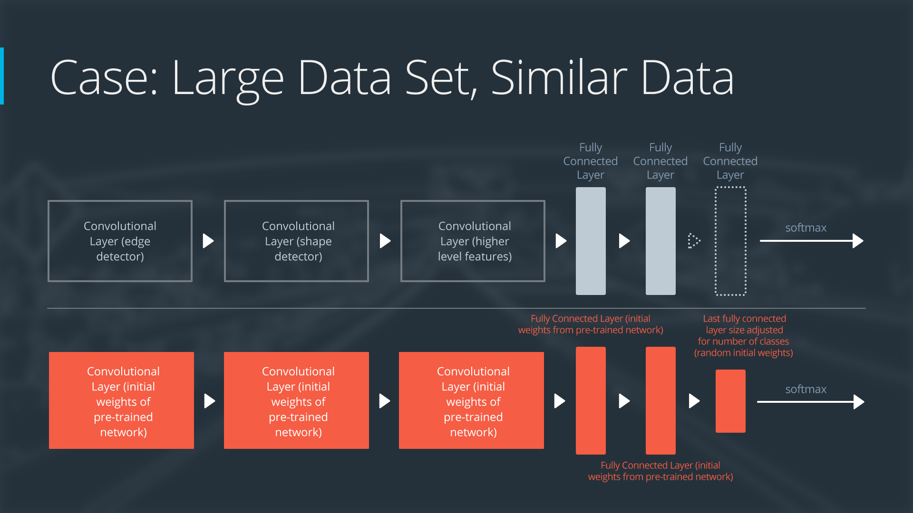

--
迁移学习
在搭建自己的深度神经网络的时候，我们完全可以借鉴别人已有的成功经验，比如 ALEX NET，VGG NET， RESNET，等等。
这种方法就叫做 迁移学习 transfer learning
什么时候，以及我们应该如何迁移？
对于不同的任务我们要采用不同的策略。
如果你有一个来自很大数据集（百万级以上）的已经训练好的模型，当你面对自己的训练集来完成你的目的时，

1. 你的训练集很大，训练任务很相似。
==> 复制已有的模型结构，以已经训练好的模型为开始状态，在你的训练集上继续训练（fine tune）

2. 你的训练集很大，训练任务不相似。
==> 复制已有的模型结构，重新开始训练（或者 fine tune 也可以）
3. 你的训练集很小，任务很相似。
==> 复制已有的结构模型，只在最后一层改为你需要的输出，冻结前面所有的模型参数，只训练最后输出层的参数

4. 你的训练集很小，训练任务不相似。
==> 无他，重新设计你的模型并开始训练（迁移学习也无解）

总结起来，就是如下：
既然采用了迁移学习，那么常用的两种方法就是 feature extraction 和 fine-tuning
前者在于，我们改变已有 model 的最后输出层（或者几层），同时对前面层的参数固定不变。
后者在于，前面层的参数在训练的时候也是会改变的。
换种理解，feature extraction 就是我们让样本现通过已有的模型的前面，得到在 high level 的 feature， 再对 high level 的 feature 进行训练。
DEMO
这是一个利用AlexNet 来进行交通标志识别的模型
代码可以在下面的地址访问到：
https://github.com/udacity/CarND-Alexnet-Feature-Extraction
AlexNet 的相关论文可以在一下地址访问到： AlexNet
这里是一份 AlexNet 的 tensorflow 代码实现
tensorflow AlexNet 训练集还是来自于 German Traffic Sign Recognition Benchmark dataset 这里有一个已经经过预处理的训练集： train data set
一个已经训练好的 AlexNet 模型，用 npy 文件格式保存的
Bvlc Alexnet Weights
我们来解读一下代码，看看这个 transfere learning 到底怎么做。
1. AlexNet
首先我们要复现这个 AlexNet 的结构，
import numpy as np
import tensorflow as tf
net_data = np.load("bvlc-alexnet.npy", encoding="latin1").item()
def conv(input, kernel, biases, k_h, k_w, c_o, s_h, s_w, padding="VALID", group=1):
'''
From https://github.com/ethereon/caffe-tensorflow
'''
c_i = input.get_shape()[-1]
assert c_i % group == 0
assert c_o % group == 0
convolve = lambda i, k: tf.nn.conv2d(i, k, [1, s_h, s_w, 1], padding=padding)
if tf.__version__ < "1.0.0":
if group == 1:
conv = convolve(input, kernel)
else:
input_groups = tf.split(3, group, input)
kernel_groups = tf.split(3, group, kernel)
output_groups = [convolve(i, k) for i, k in zip(input_groups, kernel_groups)]
conv = tf.concat(3, output_groups)
else:
if group == 1:
conv = convolve(input, kernel)
else:
input_groups = tf.split(input, group, 3)
kernel_groups = tf.split(kernel, group, 3)
output_groups = [convolve(i, k) for i, k in zip(input_groups, kernel_groups)]
conv = tf.concat(output_groups, 3)
return tf.reshape(tf.nn.bias_add(conv, biases), [-1] + conv.get_shape().as_list()[1:])
def AlexNet(features, feature_extract=False):
"""
Builds an AlexNet model, loads pretrained weights
"""
# conv1
# conv(11, 11, 96, 4, 4, padding='VALID', name='conv1')
k_h = 11
k_w = 11
c_o = 96
s_h = 4
s_w = 4
conv1W = tf.Variable(net_data["conv1"][0])
conv1b = tf.Variable(net_data["conv1"][1])
conv1_in = conv(features, conv1W, conv1b, k_h, k_w, c_o, s_h, s_w, padding="SAME", group=1)
conv1 = tf.nn.relu(conv1_in)
# lrn1
# lrn(2, 2e-05, 0.75, name='norm1')
radius = 2
alpha = 2e-05
beta = 0.75
bias = 1.0
lrn1 = tf.nn.local_response_normalization(conv1, depth_radius=radius, alpha=alpha, beta=beta, bias=bias)
# maxpool1
# max_pool(3, 3, 2, 2, padding='VALID', name='pool1')
k_h = 3
k_w = 3
s_h = 2
s_w = 2
padding = 'VALID'
maxpool1 = tf.nn.max_pool(lrn1, ksize=[1, k_h, k_w, 1], strides=[1, s_h, s_w, 1], padding=padding)
# conv2
# conv(5, 5, 256, 1, 1, group=2, name='conv2')
k_h = 5
k_w = 5
c_o = 256
s_h = 1
s_w = 1
group = 2
conv2W = tf.Variable(net_data["conv2"][0])
conv2b = tf.Variable(net_data["conv2"][1])
conv2_in = conv(maxpool1, conv2W, conv2b, k_h, k_w, c_o, s_h, s_w, padding="SAME", group=group)
conv2 = tf.nn.relu(conv2_in)
# lrn2
# lrn(2, 2e-05, 0.75, name='norm2')
radius = 2
alpha = 2e-05
beta = 0.75
bias = 1.0
lrn2 = tf.nn.local_response_normalization(conv2, depth_radius=radius, alpha=alpha, beta=beta, bias=bias)
# maxpool2
# max_pool(3, 3, 2, 2, padding='VALID', name='pool2')
k_h = 3
k_w = 3
s_h = 2
s_w = 2
padding = 'VALID'
maxpool2 = tf.nn.max_pool(lrn2, ksize=[1, k_h, k_w, 1], strides=[1, s_h, s_w, 1], padding=padding)
# conv3
# conv(3, 3, 384, 1, 1, name='conv3')
k_h = 3
k_w = 3
c_o = 384
s_h = 1
s_w = 1
group = 1
conv3W = tf.Variable(net_data["conv3"][0])
conv3b = tf.Variable(net_data["conv3"][1])
conv3_in = conv(maxpool2, conv3W, conv3b, k_h, k_w, c_o, s_h, s_w, padding="SAME", group=group)
conv3 = tf.nn.relu(conv3_in)
# conv4
# conv(3, 3, 384, 1, 1, group=2, name='conv4')
k_h = 3
k_w = 3
c_o = 384
s_h = 1
s_w = 1
group = 2
conv4W = tf.Variable(net_data["conv4"][0])
conv4b = tf.Variable(net_data["conv4"][1])
conv4_in = conv(conv3, conv4W, conv4b, k_h, k_w, c_o, s_h, s_w, padding="SAME", group=group)
conv4 = tf.nn.relu(conv4_in)
# conv5
# conv(3, 3, 256, 1, 1, group=2, name='conv5')
k_h = 3
k_w = 3
c_o = 256
s_h = 1
s_w = 1
group = 2
conv5W = tf.Variable(net_data["conv5"][0])
conv5b = tf.Variable(net_data["conv5"][1])
conv5_in = conv(conv4, conv5W, conv5b, k_h, k_w, c_o, s_h, s_w, padding="SAME", group=group)
conv5 = tf.nn.relu(conv5_in)
# maxpool5
# max_pool(3, 3, 2, 2, padding='VALID', name='pool5')
k_h = 3
k_w = 3
s_h = 2
s_w = 2
padding = 'VALID'
maxpool5 = tf.nn.max_pool(conv5, ksize=[1, k_h, k_w, 1], strides=[1, s_h, s_w, 1], padding=padding)
# fc6, 4096
fc6W = tf.Variable(net_data["fc6"][0])
fc6b = tf.Variable(net_data["fc6"][1])
flat5 = tf.reshape(maxpool5, [-1, int(np.prod(maxpool5.get_shape()[1:]))])
fc6 = tf.nn.relu(tf.matmul(flat5, fc6W) + fc6b)
# fc7, 4096
fc7W = tf.Variable(net_data["fc7"][0])
fc7b = tf.Variable(net_data["fc7"][1])
fc7 = tf.nn.relu(tf.matmul(fc6, fc7W) + fc7b)
if feature_extract:
return fc7
# fc8, 1000
fc8W = tf.Variable(net_data["fc8"][0])
fc8b = tf.Variable(net_data["fc8"][1])
logits = tf.matmul(fc7, fc8W) + fc8b
probabilities = tf.nn.softmax(logits)
return probabilities
feature extraction 如何利用 AlexNet 提取特征？
import time
import tensorflow as tf
import numpy as np
import pandas as pd
from scipy.misc import imread
from alexnet import AlexNet
sign_names = pd.read_csv('signnames.csv')
nb_classes = 43
x = tf.placeholder(tf.float32, (None, 32, 32, 3))
resized = tf.image.resize_images(x, (227, 227))
# Returns the second final layer of the AlexNet model,
# this allows us to redo the last layer specifically for
# traffic signs model.
fc7 = AlexNet(resized, feature_extract=True)
shape = (fc7.get_shape().as_list()[-1], nb_classes)
fc8W = tf.Variable(tf.truncated_normal(shape, stddev=1e-2))
fc8b = tf.Variable(tf.zeros(nb_classes))
logits = tf.nn.xw_plus_b(fc7, fc8W, fc8b)
probs = tf.nn.softmax(logits)
init = tf.initialize_all_variables()
sess = tf.Session()
sess.run(init)
# Read Images
im1 = imread("construction.jpg").astype(np.float32)
im1 = im1 - np.mean(im1)
im2 = imread("stop.jpg").astype(np.float32)
im2 = im2 - np.mean(im2)
# Run Inference
t = time.time()
output = sess.run(probs, feed_dict={x: [im1, im2]})
# Print Output
for input_im_ind in range(output.shape[0]):
inds = np.argsort(output)[input_im_ind, :]
print("Image", input_im_ind)
for i in range(5):
print("%s: %.3f" % (sign_names.ix[inds[-1 - i]][1], output[input_im_ind, inds[-1 - i]]))
print()
print("Time: %.3f seconds" % (time.time() - t))